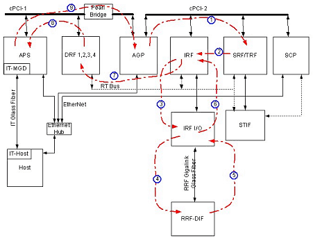

Proprietary to General Electric Company
Direction 5440000, Rev# 5
Signa HDxt Service Methods
Module Version 1.0, Version Date 4/26/07
Proprietary to General Electric Company |
Diagnostics >> RRF Chassis >> RRF Datapath Diagnostics
This diagnostic validates the following datapath AGP->SRF->IRF->RRF-DIF->IRF->DRF->APS.
AGP
SRF
IRF
SCP
RRF-DIF
None
Illustration 1: RRF Feeder Block Diagram

This test uses the CAN link to put the RRF-DIF board into a feeder mode. A PSD then plays out a pulse to the RRF-DIF board across the Gigalink fiber connection. The RRF-DIF board will correctly formulate the data and send it back to the Receivers. The Data is then received from the DRF boards and verified to ensure that the data received matches the data sent.
Output values are judged pass or fail. In the event of failure, the details of the failure can be found in the GE System Log.
Although, in the case of errors you can click the 1st Error number to see the nature of the error, it is recommended that you view the GE System Log to view all the errors that were recorded.
Click [Calculate Time] to get an estimate of the time it will take to run the selected diagnostics.
| NOTE: | Other than Test Iterations, the Test Options settings should not be changed from their default settings unless instructed to do so by a GE Healthcare engineer. There are very few circumstances when these settings ever need to be changed. |
RRF-DIF Help Page: /csd/mr_csd/serviceDesktop/docs/cclass/rf-dif_board/rf-dif_board.htm
Receiver Board Help Page: /csd/mr_csd/serviceDesktop/docs/cclass/receiver_board/receiver_board.htm
DRF Help Page: /csd/mr_csd/serviceDesktop/docs/cclass/drf1_boards/drf1_boards.htm